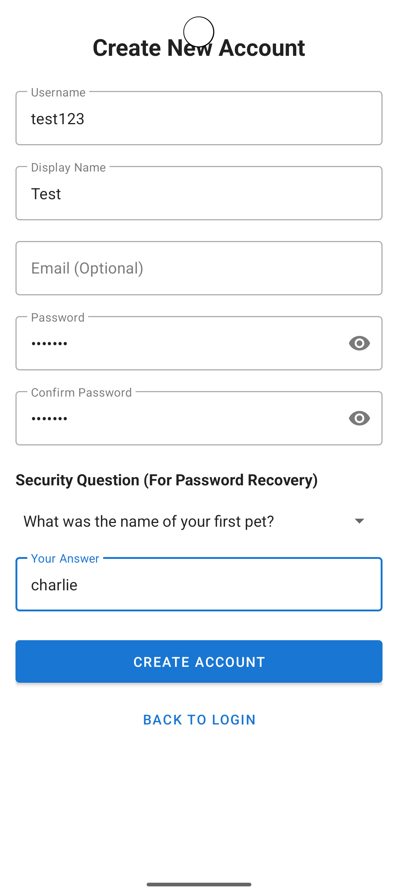
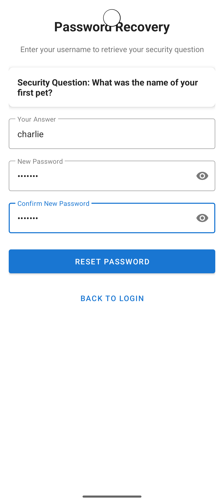
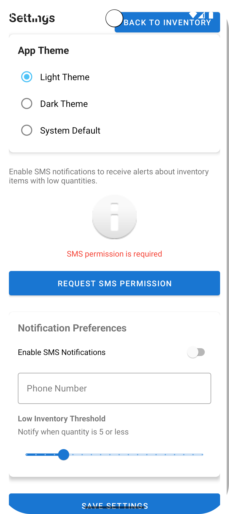
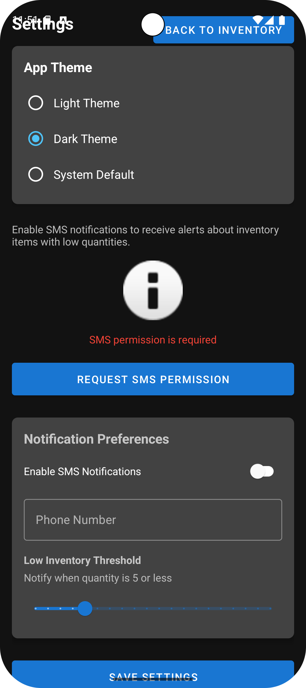

Software Engineering and Design
CS-360 Mobile Architect and Programming
Overview:
CS-360 Mobile Architect and Programming is an application that can easily demonstrate the knowledge in terms of software engineering and design, it shows the ability to create an inventory system that utilizes both client and server-side development during its life cycle. The inventory system was originally created as a basic application to create inventory items to showcase variable manipulation between client and server-side database items. The overall functionality is basic and needs to be expanded upon in terms of user readability and create a better overall user experience. I have created various enhancements for the application, and the enhancements have allowed for an overall better user experience and showcases the ability for client and server development and software engineering in a complex inventory system.
Enhancements:
- Create a forgotten password authentication page that uses security questions to verify identity and allows the user to change their password if they have forgotten, the administrators of the application can also change user's passwords which is needed if the user does not know their security answer.
- Create a system so the user can change their current password or username if needed which allows for a better user experience overall and customizability.
- The ability for administrators to modify current item's variables such as quantity, date of release, and the name of the item, it allows for a more dynamic system and allows for a better way of editing items instead of deleting and recreating.
- Themes throughout the application such as dark/light themes and the themes are either manually dark or light or the ability to go off of the setting of the mobile device to determine the theme utilized.
Are The Enhancements Completed?:
The enhancements that were planned for CS-360 were completed and more, the enhancements completed are more towards the design of the application the design of the application has changed in terms of better user-experience when it comes to the UI. The UI has been updated with a dark and light theme for the user to chose preferences but can also specify if they want it to follow the system's theme preference. The inventory system has also been vastly improved in terms of the productivity and effective use of the system. The inventory system has been improved in terms of being able to edit items that are currently in the system which is the quantity, name, and the date of which the item should be posted. If you chose an item to be posted in the future it will lock the item down until that date. The mobile application also has a forgotten password prompt for users that have forgotten their password and they can utilize their security question introduced during the user account creation.
Were There Any Issues During Enhancement Phase?
There were various issues that were introduced during the enhancement phase in terms of Android Studio not cooperating. The projects kept getting corrupted and graddle kept crashing which I had to keep reinstalling. The issues were related to Android Studio not properly shutting down and sometimes even overriting code which I think was related to OneDrive which is now disabled on my machine. The overall development phase of the enhancements went smooth other than the software issue.
Forgotten Password:
The forgotten password system allows for the user to retrieve their user account and reset their password if needed utilizing the security question and answer created when the user makes their account. It allows for the user to retrieve their password without having to contact the administrators of the application. It allows for a better user experience and allow for the users to change their password as needed.


ForgottenPasswordFragment.java
private void getSecurityQuestion() {
clearErrors();
String username = getText(etUsername);
if (TextUtils.isEmpty(username)) {
usernameLayout.setError("Please enter your username");
etUsername.requestFocus();
return;
}
String securityQuestion = databaseHelper.getSecurityQuestion(username);
if (securityQuestion == null || securityQuestion.isEmpty()) {
usernameLayout.setError("Username not found or no security question set");
etUsername.requestFocus();
Toast.makeText(getContext(), "Username not found or no security question was set for this account",
Toast.LENGTH_LONG).show();
return;
}
currentUsername = username;
questionRetrieved = true;
tvSecurityQuestion.setText("Security Question: " + securityQuestion);
showRecoveryStep();
etSecurityAnswer.requestFocus();
}CreateAccountFragment.java
public class CreateAccountFragment extends Fragment {
// code before
private final String[] securityQuestions = {
"Select a security question...",
"What was the name of your first pet?",
"What city were you born in?",
"What was your mother's maiden name?",
};
// code after
}Application Theme Dark/Light:
The mobile themes allows for users to determine which theme is better for them, most users utilize dark themes because it is better on your eyes under certain circumstances, but the application also utilizes the mobile device's theme settings to determine which theme to use but the user can also determine which theme manually depending on their circumstances or needs.


ThemeManager.java
public class ThemeManager {
// code before
public static void applyTheme(Context context) {
SharedPreferences preferences = context.getSharedPreferences(PREF_NAME, Context.MODE_PRIVATE);
String theme = preferences.getString(THEME_PREF, THEME_SYSTEM);
switch (theme) {
case THEME_DARK:
AppCompatDelegate.setDefaultNightMode(AppCompatDelegate.MODE_NIGHT_YES);
break;
case THEME_LIGHT:
AppCompatDelegate.setDefaultNightMode(AppCompatDelegate.MODE_NIGHT_NO);
break;
case THEME_SYSTEM:
default:
AppCompatDelegate.setDefaultNightMode(AppCompatDelegate.MODE_NIGHT_FOLLOW_SYSTEM);
break;
}
}
public static String getCurrentTheme(Context context) {
SharedPreferences preferences = context.getSharedPreferences(PREF_NAME, Context.MODE_PRIVATE);
return preferences.getString(THEME_PREF, THEME_SYSTEM);
}
// code after
}